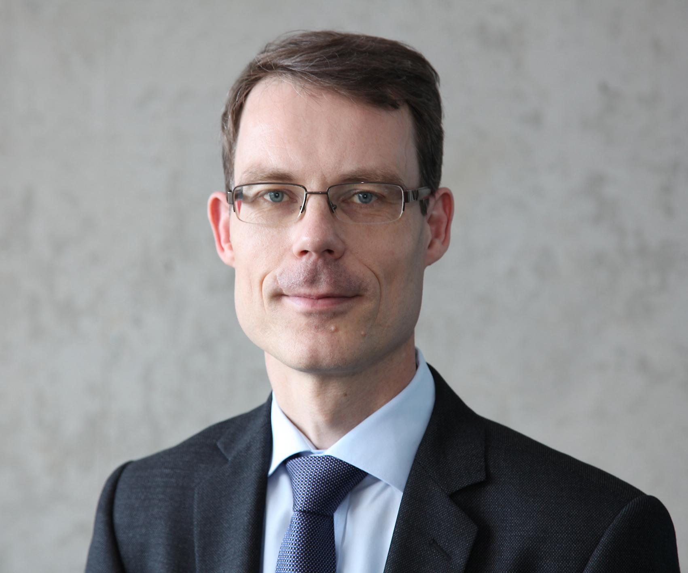

Kai Carstensen

Hello! I am Professor of Econometrics at Kiel University and External Research Professor at the ifo Institute in Munich. My work is in empirical macroeconomics, business cycle analysis, business surveys, and forecasting.
At Kiel University I am based at the Institute for Statistics and Econometrics. I am also a member of the Scientific Advisory Council of the Kiel Institute for the World Economy and of the Scientific Advisory Council in Economics at the AiMark Institute.
My research focuses on:
- empirical macroeconomics and business-cycle measurement,
- business surveys and belief formation of firms,
- inflation and business cycle forecasting,
- applied econometric methods for macroeconomics.
Before joining Kiel University in 2014, I was Professor of Economics at Ludwig Maximilians University Munich and Head of the Business Cycle Analysis and Surveys Department at the ifo Institute. In that role I coordinated the ifo Business Climate surveys and represented ifo in the Joint Economic Forecast for the German Federal Government.
Contact
Prof. Dr. Kai Carstensen
Kiel University
Institute for Statistics and Econometrics
Wilhelm-Seelig-Platz 6/7, Room 405
24118 Kiel, Germany
carstensen@stat-econ.uni-kiel.de
+49 431 880-1423